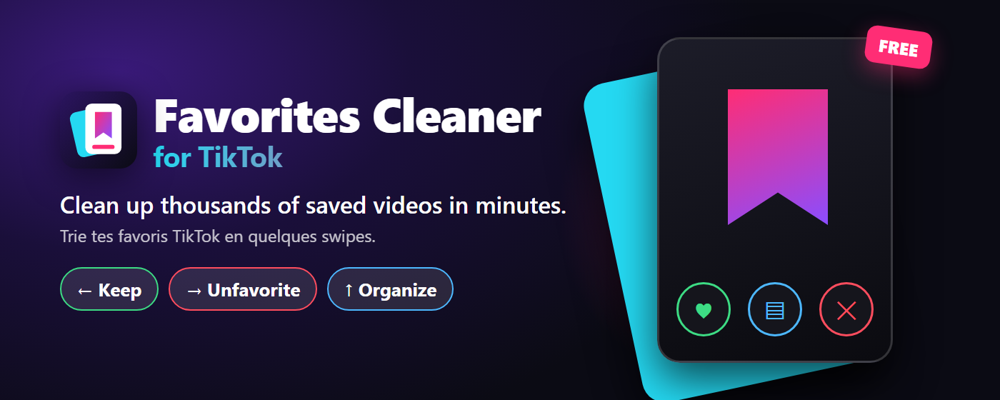
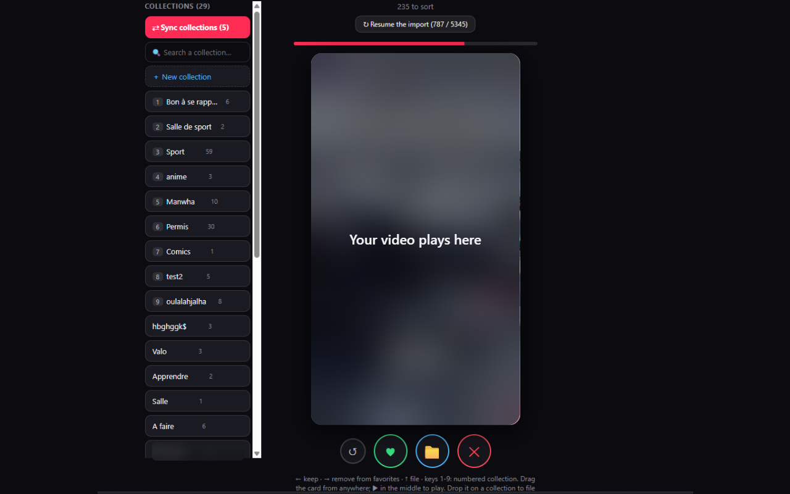
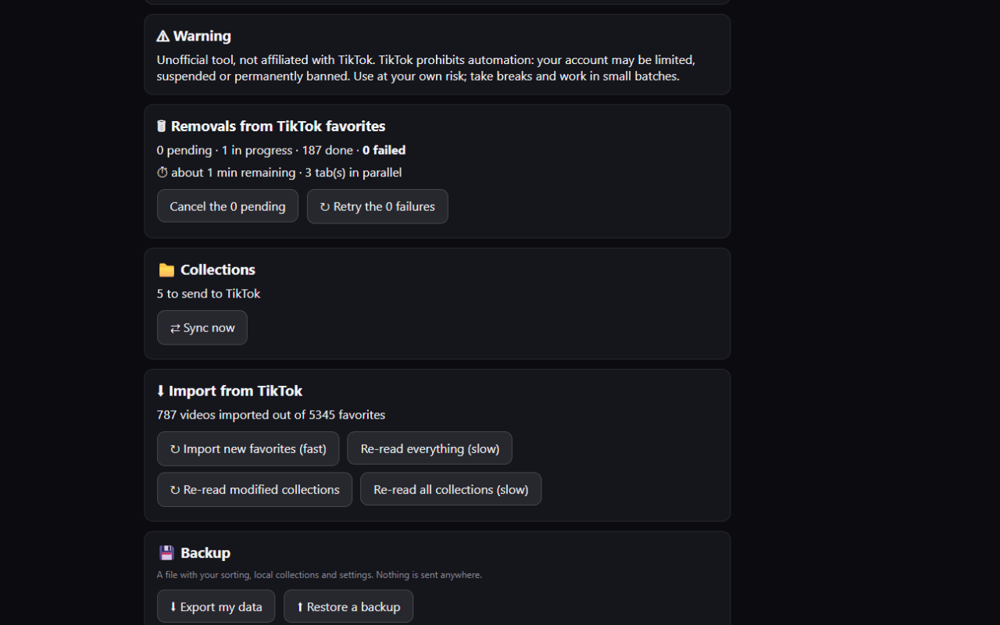

Clean up your TikTok favorites in minutes.
Thousands of saved videos you never rewatch? Favorites Cleaner for TikTok turns them into a deck of cards: swipe to keep, unfavorite, or file into a collection. Free up to 200 removals a day.
＋ Add to Chrome – it's free Get Pro – €5, one-time
On the Chrome Web Store, also works in Edge and Brave. Or install it manually (.zip).

How it works
ImportOne click reads your TikTok favorites. You can start sorting while it loads.
SwipeLeft = keep · Right = remove from favorites · Up = file into a collection.
DoneRemovals and filing are sent to TikTok for you, in the background. You can undo for a few seconds.
See it


Free or Pro
- 200 removals per day
- Sorting, collections, undo
- Backup and restore of your data
- 1 background tab
- Unlimited removals
- Up to 3 tabs at once, faster
- Supports the development
One payment, no subscription, 14-day refund on request (details). A license key is e-mailed to you: click the “⭐ Go Pro” button at the top of the extension and paste it there.
☕ The free version is enough for you? You can still say thanks with a coffee. ☕ Donate on Ko-fi
Private and honest
Everything stays in your browser: no tracking, no ads. Read the privacy policy.
The extension automates actions on your TikTok account, which may go against TikTok's terms of service. TikTok may limit, suspend or ban an account. You use it at your own risk. Favorites Cleaner for TikTok is an independent tool and is not affiliated with, endorsed by or sponsored by TikTok.
Privacy policy
Last updated: September 19, 2026 · Publisher: Sortfold
In short
- Your favorites, collections, sorting choices and settings stay on your computer. The publisher has no access to them.
- The extension contains no analytics, trackers, ads or cookies.
- The only communication with a server is the Pro license check with Lemon Squeezy, and only if you use a license.
- The extension is not affiliated with TikTok.
What the extension reads
On tiktok.com pages, the extension reads what is displayed (your favorites list, collections, video IDs, the signed-in account name) to build your deck of cards. It also clicks TikTok's buttons on your behalf (remove from favorites, add to a collection). None of this information is sent to anyone.
What is stored, and where
Everything is kept in the extension's local storage in your browser:
| Data | Purpose |
|---|---|
| Your video list, sorting decisions, collections, action log (per TikTok account) | Make sorting and undo work |
| Settings (delays, number of tabs, risk-warning acceptance) | Your preferences |
| Today's removal counter | Enforce the free plan limit |
| License key and activation ID (Pro only) | Unlock Pro |
| Pending removal queue | Resume after a page is closed |
This data never leaves your browser. The extension's "Reset everything" button erases it; uninstalling the extension removes it too. The backup export creates a file on your disk, which you manage yourself.
The only network call: the Pro license
If you enter a license key, the extension contacts api.lemonsqueezy.com to activate it, then re-checks it about every 7 days. Sent: the key, an instance name (your browser version) and the activation ID. Lemon Squeezy replies with the license status and the e-mail address tied to the purchase, which the extension shows in its settings. Lemon Squeezy processes this data under its own policy: lemonsqueezy.com/privacy.
Payment
Payment for Pro is handled entirely by Lemon Squeezy, which acts as the merchant of record. The publisher never sees or stores your card details, and may receive your name, e-mail and the billing information needed for the sale.
Optional donations go through Ko-fi, a third-party service opened in a new tab; this policy does not cover it.
Permissions requested
tiktok.com: read and drive TikTok's interface to sort your favorites.api.lemonsqueezy.com: verify the Pro license.storage,unlimitedStorage: keep your data locally (thousands of favorites).tabs: open and close the worker tabs that remove videos.alarms: resume the queue after a pause.declarativeNetRequest: block images and video in worker tabs for speed.
No code is loaded from the Internet.
Children
The extension is not intended for anyone below the minimum age to use TikTok.
Your rights and contact
Because the publisher does not collect your sorting data, there is nothing to request: you control it directly. For sales data (name, e-mail, invoice), write to sortfold@gmail.com to request access, correction or deletion, subject to legal retention obligations (GDPR).
Changes
If this policy changes, the date above will be updated, and any new data transmission will be announced in the release notes before it is introduced.
Fais le ménage dans tes favoris TikTok en quelques minutes.
Des milliers de vidéos enregistrées que tu ne revois jamais ? Le Nettoyeur de favoris pour TikTok les transforme en paquet de cartes : glisse pour garder, retirer des favoris ou ranger dans une collection. Gratuit jusqu'à 200 retraits par jour.
＋ Ajouter à Chrome – c'est gratuit Prendre le Pro – 5 €, une fois
Sur le Chrome Web Store, marche aussi avec Edge et Brave. Ou installe-la à la main (.zip).
Comment ça marche
ImporteUn clic lit tes favoris TikTok. Tu peux commencer à trier pendant le chargement.
GlisseGauche = garder · Droite = retirer des favoris · Haut = ranger dans une collection.
C'est faitLes retraits et les rangements partent à TikTok à ta place, en arrière-plan. Tu peux annuler pendant quelques secondes.
Aperçu
Gratuit ou Pro
- 200 retraits par jour
- Tri, collections, annulation
- Sauvegarde et restauration de tes données
- 1 onglet en arrière-plan
- Retraits illimités
- Jusqu'à 3 onglets en même temps, plus rapide
- Tu soutiens le développement
Un seul paiement, sans abonnement, remboursement sous 14 jours sur demande (détails). Une clé de licence t'est envoyée par e-mail : clique sur « ⭐ Passer en Pro » en haut de l'extension et colle-la là.
☕ La version gratuite te suffit ? Tu peux quand même dire merci avec un café. ☕ Faire un don sur Ko-fi
Privé et honnête
Tout reste dans ton navigateur : aucun traceur, aucune publicité. Lire la politique de confidentialité.
L'extension automatise des actions sur ton compte TikTok, ce qui peut aller à l'encontre des conditions d'utilisation de TikTok. TikTok peut limiter, suspendre ou bannir un compte. Tu l'utilises à tes propres risques. Nettoyeur de favoris pour TikTok est un outil indépendant, non affilié à TikTok, ni approuvé ni sponsorisé par TikTok.
Politique de confidentialité
Dernière mise à jour : 19 septembre 2026 · Éditeur : Sortfold
En bref
- Tes favoris, tes collections, tes choix de tri et tes réglages restent sur ton ordinateur. L'éditeur n'y a pas accès.
- Il n'y a ni statistiques, ni traceurs, ni publicité, ni cookies dans l'extension.
- La seule communication avec un serveur est la vérification de la clé de licence Pro auprès de Lemon Squeezy, et uniquement si tu utilises une licence.
- L'extension n'est pas affiliée à TikTok.
Ce que l'extension lit
Sur les pages tiktok.com, l'extension lit le contenu affiché (liste de tes favoris, tes collections, identifiants de vidéos, nom du compte connecté) pour construire ton paquet de cartes. Elle clique aussi sur les boutons de TikTok à ta place (retirer des favoris, ajouter à une collection). Ces informations ne sont envoyées à personne.
Ce qui est enregistré, et où
Tout est stocké dans l'espace de stockage local de l'extension dans ton navigateur :
| Donnée | Utilité |
|---|---|
| Liste de tes vidéos, décisions de tri, collections, journal des actions (par compte TikTok) | Faire fonctionner le tri et l'annulation |
| Réglages (délais, nombre d'onglets, acceptation de l'avertissement de risque) | Ton confort d'utilisation |
| Compteur de retraits du jour | Appliquer la limite de la version gratuite |
| Clé de licence et identifiant d'activation (si Pro) | Débloquer la version Pro |
| File des retraits en cours | Reprendre après une fermeture de page |
Ces données ne quittent pas ton navigateur. Le bouton « Tout réinitialiser » de l'extension les efface ; désinstaller l'extension les supprime aussi. L'export de sauvegarde crée un fichier sur ton disque, que tu gères toi-même.
Le seul échange réseau : la licence Pro
Si tu saisis une clé de licence, l'extension contacte api.lemonsqueezy.com pour l'activer, puis la revérifie environ tous les 7 jours. Sont envoyés : la clé, un nom d'instance (la version de ton navigateur) et l'identifiant d'activation. Lemon Squeezy répond avec l'état de la licence et l'adresse e-mail liée à l'achat, que l'extension affiche dans ses réglages. Lemon Squeezy traite ces données selon sa propre politique : lemonsqueezy.com/privacy.
Paiement
Le paiement de la version Pro est géré entièrement par Lemon Squeezy, qui agit comme vendeur (« merchant of record »). L'éditeur ne voit ni ne conserve tes coordonnées bancaires ; il peut recevoir ton nom, ton adresse e-mail et les informations de facturation nécessaires à la vente.
Les dons facultatifs passent par Ko-fi, un service tiers ouvert dans un nouvel onglet ; cette politique ne le couvre pas.
Permissions demandées
tiktok.com: lire et piloter l'interface de TikTok pour trier tes favoris.api.lemonsqueezy.com: vérifier la licence Pro.storage,unlimitedStorage: conserver tes données localement (plusieurs milliers de favoris).tabs: ouvrir et fermer les onglets de travail qui retirent les vidéos.alarms: reprendre la file après une pause.declarativeNetRequest: bloquer images et vidéos dans les onglets de travail pour aller plus vite.
Aucun code n'est chargé depuis Internet.
Enfants
L'extension n'est pas destinée aux personnes n'ayant pas l'âge requis pour utiliser TikTok.
Tes droits et contact
Comme l'éditeur ne collecte pas tes données de tri, il n'y a rien à demander : tu les contrôles directement. Pour les données de vente (nom, e-mail, facture), écris à sortfold@gmail.com pour demander un accès, une correction ou une suppression, dans la limite des obligations légales de conservation (RGPD).
Modifications
Si cette politique change, la date ci-dessus sera mise à jour, et tout nouvel envoi de données sera annoncé dans les notes de version avant d'être mis en place.